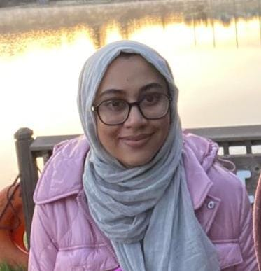

My favorite Quran Quote. Quran 94:5
About Me
My name is Aasiyah Shaikh and I am an aspiring software engineer. I am currently majoring in Computer Science at UC San Diego.
Verily, with hardship comes ease.
Skills
- Java, C, C++
- Agile Methodologies
- HTML, CSS, React, Node
- Databases
- UX Design